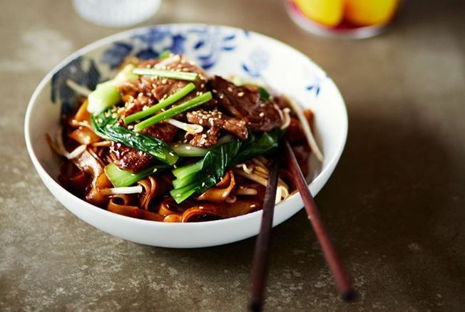
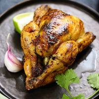
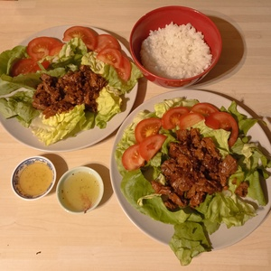

-
Nouilles sautées au boeuf
Ingrédients pour 2 personnes
- 200g de nouilles de blé
- 200g de bavette de boeuf
- 1 oignon
- 1 gousse d'ail
- 2 cuillères à soupe de sauce soja
- 2 cuillères à soupe de sauce nuoc-mâm
Préparation
- - Faire cuire les nouilles
- - Les passer sous un filet d'eau froide et les égoutter
- - Couper la bavette en fines lamelles
- - Éplucher et émincer l'oignon et l'ail
- - Faire chauffer un filet d'huile de tournesol dans une poêle
- - Faire dorer l'oignon et l'ail
- - Ajouter la viande puis les sauces
- - Faire revenir 3 minutes à feu vif
- - Saler et poivrer
- - Ajouter les nouilles et faire sauter pendant 3 minutes
-
Poulet mariné au citron
Ingrédients pour 2 personnes
- 2 blancs de poulet Label rouge
- 1 citron
- 1 cuillère à café de cumin
- 1 pincée de sel
- Un brin de romarin
- 2 gousses d'ail
- Huile d'olive
Préparation
- - Couper le poulet en dés
- - Presser le citron
- - Ajouter le poulet
- - Presser l'ail
- - Ajouter le sel et le cumin
- - Ajouter le romarin lavé et coupé
- - Laisser mariner 15 minutes
- - Cuire le poulet avec un filet d'huile d'olive
-
Poulet grillé à la thaï
Ingrédients pour 2 personnes
- 2 cuisses de poulet
- 1,5 cuillère à soupe de pâte de curry jaune
- 1,5 cuillère à soupe de sauce soja
- 1,5 cuillère à soupe d'huile de sésame
Préparation
- - Mettre les cuisses dans un plat à four
- - Mélanger dans un bol le curry jaune, la sauce soja et l'huile de sésame
- - Enduire les cuisses avec la marinade
- - Laisser reposer minimum 2h
- - Préchauffer le four à 210°C
- - Faire cuire le poulet 30 minutes
-
Boeuf lok lak
Ingrédients pour 2 personnes
- 250g de filet de boeuf
- 1 tomate
- 100g de laitue
- 1 oignon
- 1 gousse d'ail
- 1 pincées de paprika
- 1 cuillère à soupe d'huile de tournesol
Ingrédients pour la marinade
- 2 cuillères à café de paprika
- 2 pincées de cuillère à café de poivre moulu
- 1 pincée glutamate
- 1 cuillère à soupe de fécule de maïs
- 2 cuillères à soupe de sauce nuoc-mâm
- 1 cuillère à soupe de sauce soja claire
- 1 cuillère à soupe d'huile de tournesol
- 1 cuillère à soupe de sucre
Ingrédients et préparation de la sauce lok lak
- Rendez-vous sur la page "Les bases culinaires" !
Préparation
- - Couper le boeuf en morceaux de la taille d'une bouchée
- - Peler et émincer l'oignon et l'ail
- - Couper la tomate en rondelles
- - Laver et essorer la salade
- - Mettre les ingrédients de la marinade, le boeuf et l'ail dans un saladier
- - Mélanger, couvrir le saladier et laisser reposer une heure au frigo
- - Faire chauffer une cuillère à soupe d'huile de tournesol dans un wok
- - Faire revenir les oignons et ajouter le boeuf
- - Faire chauffer pendant 1 minute à feu vif
- - Ajouter la marinade et mélanger vivement pendant 2 minutes
- - Disposer les feuilles de salade, la tomate et le boeuf dans des assiettes
-
Chirashi au poulet
Ingrédients pour 2 personnes
- 175g de riz japonais
- 2,5 cuillères à soupe de vinaigre de riz
- 1,5 cuillère à soupe de sucre
- 200g de poulet
- 1 carotte
- 1 tomate
- 1 concombre
Ingrédients et préparation de la sauce yakiniku
- Rendez-vous sur la page "Les bases culinaires" !
Préparation du riz vinaigré
- Rendez-vous sur la page "Les bases culinaires" !
Préparation du chirashi
- - Mettre le poulet coupé en petits dés dans un plat
- - Verser la marinade dessus
- - Réserver au frigo pendant 15 minutes
- - Placer le riz dans des bols
- - Raper la carotte, couper la tomate et le concombre
- - Les disposer au dessus du riz
- - Faire cuire le poulet avec un filet d'huile d'olive
- - Une fois cuit, le mettre dans les bols avec le reste de la marinade